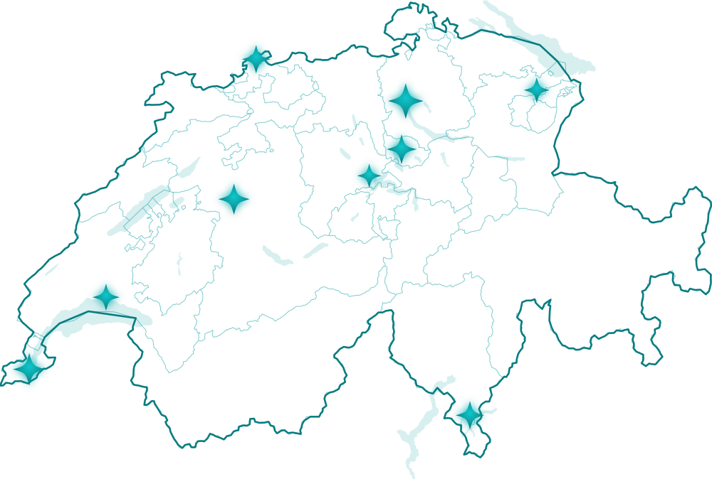

Switzerland's best fiduciaries— from startup to 250 employees
We partner with leading AI-native fiduciaries across German-, French- and Italian-speaking Switzerland. For small businesses — a fiduciary always at hand. For larger ones — a complete financial back office, run by your fiduciary, without your own finance department.

Like hiring a CFO — without the CFO's salary
A modern fiduciary in our network does more than the books. It runs your financial back office end to end, in real time. Whether you have 0 or 250 employees, you get the finance function of a much larger company — without building one.
Beyond accounting
Every fiduciary in the network runs this for you, under their own name:
Accounts receivable
issue and manage AR invoices
Banking & cash
accounts and cash registers under control
Accounts payable
supplier invoices and payments, with final approval always in your hands
Automatic document capture
records collected straight from cash registers and POS
Time & payroll
working-time tracking and salary calculation
Real-time numbers
balance sheet and P&L, live, whenever you need them
Built for every size
Small business
Stop doing it yourself, and leave the slow, paper-based fiduciary behind. An AI-native fiduciary keeps your books current — without adding headcount.
Mid-sized & large
Don't build a whole finance department. A fiduciary from the network gives you a complete AI-native back office that scales with you — for a fraction of an in-house team.
Better finance, lower cost
For small and mid-sized companies, a fiduciary from our network costs less than a traditional one. For larger ones, it's a fraction of the cost of your own accountant or finance team. You get more — real-time visibility, automation, a CFO-grade view — and pay less than the alternative.
What makes them the best
“Best” is not a claim — it's a checklist. Every fiduciary in the network meets five verifiable criteria:
01Books in real time.
Entries are posted as documents arrive — not once a quarter. You see today's balance sheet, P&L and cash position, not a report about the past.
02Every figure reconciled to the source.
Bank statements, cash registers and invoices are matched to the rappen. Behind every entry there is a document.
03A client portal under your fiduciary's brand.
Send documents from your phone in seconds; see the status of your books and payments at any time. No shoebox of receipts at quarter-end.
04Swiss hosting, Swiss data protection.
Data is stored in Switzerland, processed in line with the revDSG and archived for 10 years (Art. 958f of the Swiss Code of Obligations).
05One platform, one standard.
The network consists of fiduciaries selected by Arvut and working on a single production platform — with the same requirements for accuracy and turnaround.
FAQ
How much does it cost?
You agree the fee directly with your fiduciary — it depends on the volume and scope of work. Arvut's matching is free and comes with no obligation.
Which cantons and languages do you cover?
All of Switzerland. Fiduciaries in the network work in English, German, French and Italian — we match you with one that speaks your language and knows your canton's practice.
How safe is our data?
Data is hosted on servers in Switzerland and processed in accordance with the revDSG. Accounting records are archived for 10 years, as required by Art. 958f of the Swiss Code of Obligations.
We already have an accountant or a fiduciary. How hard is switching?
Your new fiduciary handles the transition: history, opening balances and open invoices are carried over. You keep working without interruption — no starting from scratch.
Why don't you publish the list of fiduciaries?
Because matching beats a directory. We take into account your canton, language, industry and company size — and introduce you directly to the fiduciary that fits your business.
We match you with the right fiduciary
We don't publish the list openly. Instead, you reach out to us directly — and we take the matching from there.
You get in touch
write to us or book a call.
Meeting & live demo
we show how it works on real scenarios and look at your situation.
We match a partner
by your canton, language and size, we hand you to the right fiduciary in our network.
Every fiduciary in the network is selected, AI-native and Arvut-powered. Real-time reporting · Swiss hosting · revDSG-compliant.
Shall we start?
Book a demo — or just write to us. We'll get to know you, show you the system, and match you with the right fiduciary.
We use the form data solely to answer your request. Privacy policy
Or directly: calendly.com/arvut · fiduciaries@arvut.ch